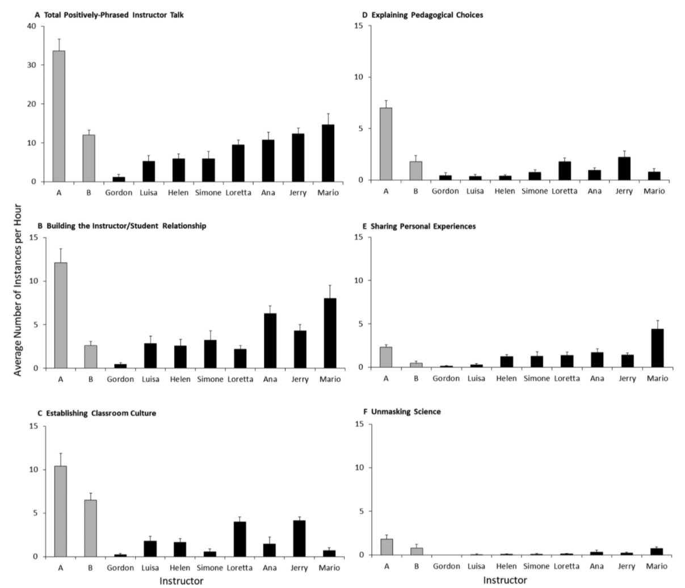

Instructor Talk
Seidel, S. B., Reggi, A. L., Schinske, J. N., Burrus, L. W., & Tanner, K. D. (2015). CBE---Life Sciences Education, 14(4), ar43.
Harrison, C. D. et al. (2019). CBE---Life Sciences Education, 18(3), ar47.
What it says
- This pair of papers introduce and explore the dimensions of a construct called instructor talk---"language used by an instructor that is not directly related to the concepts under study but instead focuses on creating the learning environment." Their results show that instructor talk varies interestingly among instructors and may prove to be an explanatory factor in teaching effectiveness.
- The initial study examined a single, co-taught, course, while Harrison et al.'s follow-up studied eight courses in detail and a further 61 using a sampling technique (which they also showed to be valid and reliable).
- As shown below, instructor talk is ubiquitous, but variable in frequency. The most common categories were:
- Demonstrating respect for students, e.g., “I’m not going to give you 20 pages to read over the weekend...The point is I’ll definitely do something that is doable, not impossible for you because everybody has other things to do, other classes, personal life, job, so I understand that as well.”
- Revealing secrets to success, e.g., “I want you to be taking notes in class, but I don’t want you to be trying to copy down slides...You need to be writing down things that are confusing to you or things you want to remember"
- Preframing classroom activities, e.g., “One thing I like to do in these classes is have people talk to each other and discuss problems, and take apart problems that I show. So, just to get started, because you’re going to be talking to each other a lot, I’d like to start with this simple index card exercise that I always do.”

Illustration of the range of "positively-phrased" instructor talk observed in Harrison et al. (black bars) and Seidel et al. (gray bars). Although most instructors employ most types of instructor talk, the total amount of such communication varies substantially between instructors (Figure 2 from Harrison et al.).
What we might learn from it
- Active learning is understood to be effective, but the mechanisms and the ideal circumstances are very much under investigation. Harrison et al. argue that instructor talk could be an important dimension of this research, including the way it may lower student resistance to active learning or otherwise establish a productive classroom culture for active learning.
- The second study also complicates the construct by identifying instances of "negatively phrased" instructor talk. Although a few comments in this category could help humanize the instructor, most are either mean spirited or otherwise negative in effect. This is an area where reflective instructors could work to monitor their language and reframe negatively phrased instructor talk to positive phrasing.